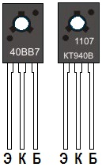

Транзистор КТ940
Транзисторы КТ940 - кремниевые, мощные, высокочастотные, структуры - n-p-n.
Корпус - КТ-27.
Маркировка буквенно - цифровая, на боковой поверхности корпуса, может быть двух типов. Кодированая четырехзначная маркировка в одну строчку и некодированная - в две. Первый знак в кодированной маркировке КТ940 цифра 40, второй знак - буква, означающая класс. Два следующих знака, означают месяц и год выпуска. В некодированной маркировке месяц и год указаны в верхней строчке. На рис. 1 показана маркировка и цоколевка транзистора КТ940В.

Рис. 1 - Внешний вид, маркировка и цоколевка транзистора КТ940

Рис. 2 - Основные размеры транзистора КТ940
Таблица 1
| Тип | Предельные значения параметров при Тп=25°С | Значения параметров при Тп=25°С | ||||||||||||
|---|---|---|---|---|---|---|---|---|---|---|---|---|---|---|
| Iк max, А |
Iк и max, А |
UкэR max, В |
Uкб0 max, В |
Uэб0 max, В |
Рк max
(Рк Т max), Вт |
h21э |
Uкэ нас, В |
Iкбо, нА |
f гp, МГц |
Ск, пф |
||||
| КТ940А | 0,1 | 0,3 | 300 | 300 | 5 | 1,2 (10) | >25 | <1 | <50 | >90 | <5,5 | |||
| КТ940Б | 0,1 | 0,3 | 250 | 250 | 5 | 1,2 (10) | >25 | <1 | <50 | >90 | <5,5 | |||
| КТ940В | 0,1 | 0,3 | 160 | 160 | 5 | 1,2 (10) | >25 | <1 | <50 | >90 | <5,5 | |||
Условные обозначения электрических параметров транзисторов
Аналоги транзистора КТ940А
2SC1569, 2SC2068, 2SC2242, 2SC2456, BF298, BF299, BF338, BF459, BF470, BF617